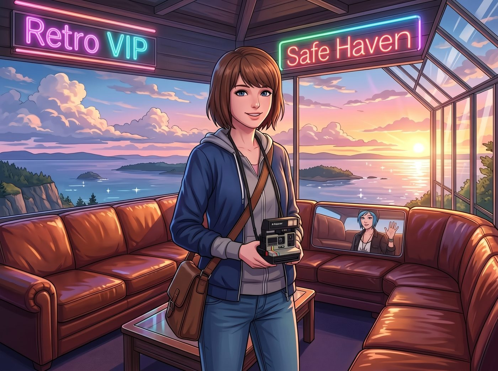
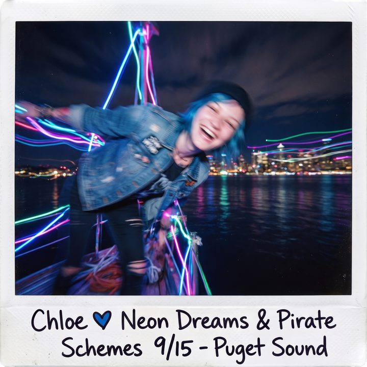

曝光與心跳


對於 Max 來說，這次海盜塔的非軍規升級，簡直是廢土生活裡的一場奇蹟。
沒有了 Lily 那種隨時會發出警報的冰冷雷達天線，也沒有了讓她覺得隨時要爆發第三次世界大戰的軍事塗裝。現在的海盜塔，在超聲波空氣幕簾和溫室氣候系統的無聲保護下，變成了一個絕對安全、溫暖、且充滿復古浪漫氣息的避難所。
Max 對這個VIP觀景台滿意得不得了。尤其是那組被 Chloe 擦得發亮的凱迪拉克真皮沙發，以及那些散發著迷幻光暈的霓虹燈管，完全擊中了這個復古文青的心臟。
一、深夜的邀約
於是，在某個深夜，當 Victoria 在房間裡敷面膜、Lily 進入了深度睡眠重啟邏輯模組、而 Kate 也在廚房裡結束了最後的禱告後……
Max 悄悄溜進了 Chloe 的房間。
「Chloe。」Max 輕輕推了推正躺在床上用遊戲機肝遊戲的藍髮女孩，「起來，我們去海盜塔。」
Chloe 摘下耳機，挑了挑眉：「現在？凌晨一點？妳想上去吹太平洋的西北風嗎？」
「她已經睡了。而且我帶了這個。」Max 神秘兮兮地從背後拿出了一個復古的卡式錄音機，還有兩條毛毯。「走啦。我想上去拍照。而且……今天晚上的星星很亮。」
看著 Max 眼睛裡閃爍的光芒，Chloe 的嘴角揚起一抹無奈又寵溺的笑容。她扔下遊戲機，從床上跳起來，順手抓起一件寬大的法蘭絨襯衫套在 Max 身上。「走吧，Super Max。既然妳想去，就算是去月球我都陪妳。」
二、塔頂的靜謐
兩人躡手躡腳地啟動了改裝電梯，來到了海盜塔的頂層。
午夜的太平洋漆黑一片，只有遠處偶爾閃過幾點貨輪的燈光。海盜塔頂被霓虹燈的紫色與暖黃色光暈籠罩著，空氣幕簾完美地將刺骨的海風和潮濕的水氣隔絕在外，只留下一片寧靜。
Chloe 熟練地走到 V8 引擎冰桶旁，從裡面摸出兩瓶白天剩下的精釀啤酒，用牙齒咬開瓶蓋，遞給 Max 一瓶。
然後，她們雙雙跌進了那張寬大柔軟的凱迪拉克沙發裡。
Max 按下了卡式錄音機的播放鍵。一首七十年代的迷幻搖滾樂在塔頂輕輕響起，帶著卡帶特有的沙沙底噪聲，完美地融入了這片賽博廢土的夜色中。
「乾杯。」Chloe 舉起酒瓶。
「乾杯。」Max 和她碰了一下。
三、寶麗來與心跳的曝光
Max 喝了一口啤酒，仰起頭，看著頭頂那片沒有光害的、璀璨的星空。在森林的邊緣，銀河清晰可見。
「這真是太不可思議了，Chloe。」Max 輕聲說道，「我們居然真的在這個車廂上面，建了一個這麼酷的觀景台。我感覺我們就像是躲在世界末日邊緣的兩個倖存者。」
「只要有妳在，世界末日對我來說也就是一場稍微大型一點的搖滾演唱會而已。」Chloe 側過頭，看著霓虹燈光打在 Max 清秀的側臉上。她伸出手，輕輕將 Max 耳邊的一縷碎發挽到耳後。她的手指帶著淡淡的機油味和煙草味，那是屬於街頭霸王的獨特氣息。
Max 的心跳漏了一拍。她轉過頭，迎上 Chloe 那雙深邃的藍色眼睛。在這種與世隔絕的浪漫氣氛裡，所有的羞澀和社交恐懼都消失了。
她沒有說話，而是慢慢地舉起了手裡的寶麗來相機。
「不准用閃光燈，Maxine。」Chloe 輕笑著，沒有躲開，而是微微傾身靠近，「會破壞氣氛的。」
「我知道。」Max 調整了相機的曝光補償，將鏡頭對準了 Chloe 的眼睛。
在沒有閃光燈的暗光環境下，寶麗來的快門速度會變得很慢。這意味著，在快門開啟到閉合的那一兩秒鐘裡，被攝者必須保持絕對的靜止，否則照片就會模糊。
「咔嚓——」快門開啟的聲音。
在這漫長而安靜的一秒鐘裡，Chloe 沒有保持靜止。她反而更進一步，準確無誤地捕捉到了 Max 的嘴唇，印下了一個帶著精釀啤酒麥香和微涼夜風的吻。
「嗡——」快門閉合，底片吐出。
四、犯規的照片
Max 睜開眼睛，臉頰滾燙，心跳如擂鼓。她看著那張正在顯影的底片，又看了看近在咫尺、笑得像隻偷腥成功的貓一樣的 Chloe。
「妳犯規了，Chloe Price。」Max 喘著氣，聲音有些發軟，「妳動了，這張照片肯定糊掉了。」
「是嗎？我看看。」Chloe 湊過去，看著那張逐漸顯現出畫面的寶麗來底片。
正如 Max 所料，因為 Chloe 在曝光期間的突然靠近，照片上的影像發生了嚴重的動態模糊。但這種模糊並沒有毀掉照片，反而產生了一種極度夢幻的藝術效果：霓虹燈的光軌在黑暗中拉出了一道道迷幻的色彩，而 Chloe 的臉龐雖然不清晰，但那種傾身向前的熱烈與渴望，卻被化學藥劑完美地記錄了下來，彷彿連周圍的空氣都在那一刻燃燒了起來。
「這是一張完美的照片，Maxine。」Chloe 伸手將 Max 攬進懷裡，讓她靠在自己的肩膀上。兩人裹著同一條毛毯，看著星空。
「它記錄了我有多想吻妳。」Chloe 輕聲在 Max 耳邊說道。
Max 靠在 Chloe 的肩頭，看著遠處漆黑的太平洋，嘴角揚起了無比安心的微笑。
在這個被空氣幕簾和合規法條層層包裹的堡壘頂端，這兩個阿卡迪亞灣的女孩，終於找到了一個可以完全放下防備、肆無忌憚地浪漫耍廢的角落。